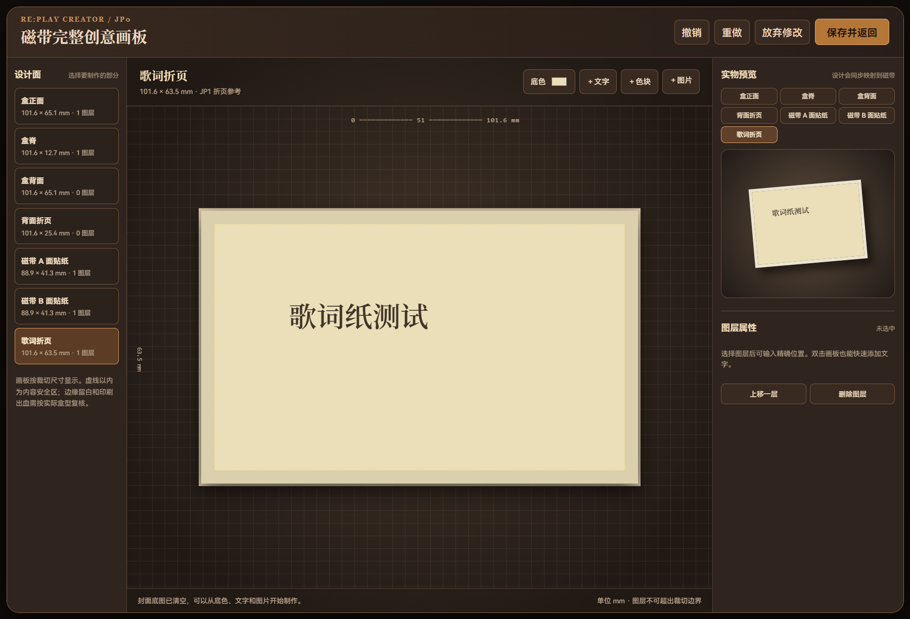

返回首页按下播放，


公开展示素材：实际播放器界面与通用磁带图形组合。此处为静态预览，不会播放音频。
RE:PLAY / THE CASSETTE EXPERIENCE
按下播放，
回到喜欢的时光。
用自己的音乐，挑歌、制带、翻面与收藏。
把一张歌单，变成值得留下的一盒磁带。
下载既有 Windows 版本v0.7.6
现有公开版本 · 下载需要联网
01 / MAKE IT YOUR MIXTAPE
有 A 面，也有 B 面。
有歌，也有心意。
从自己的音乐开始挑选，为每一盒磁带安排曲目。翻面、收藏，让聆听重新有一点仪式感。
CLASSIC C60CLASSIC C90METAL C90



02 / EVERY DETAIL, YOURS
从盒面到歌词纸，
做一盒自己的磁带。
设计盒面、盒脊、磁带贴纸和歌词纸。上传封面，自动搭配盒脊颜色，让整盒作品拥有统一的样子。
RE:PLAY FOR WINDOWS
下一盒磁带，留给你。
公开安装包：v0.7.6 · 约 135 MiB
安装包未签名，Windows 可能显示“未知发布者”。下载前可查看版本说明。